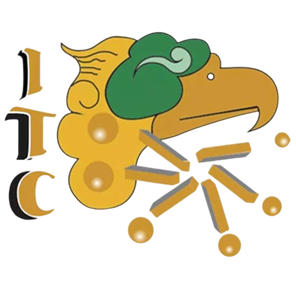

`
SII :: Acceso

www.cuautla.tecnm.mx
"Si eres de 1er y 2do Semestre Visita esta liga: pit.cuautla.tecnm.mx"
AguiBOT
En línea
¡Hola! Soy AguiBOT, tu asistente virtual del ITCA.
¿En qué puedo ayudarte hoy?
¿Cómo recupero mi NIP?
Proceso de inscripción
Fechas importantes
Autentificacin para acceso al sistema
Introduce los datos correspondientes:
No. Solicitud:
NIP: